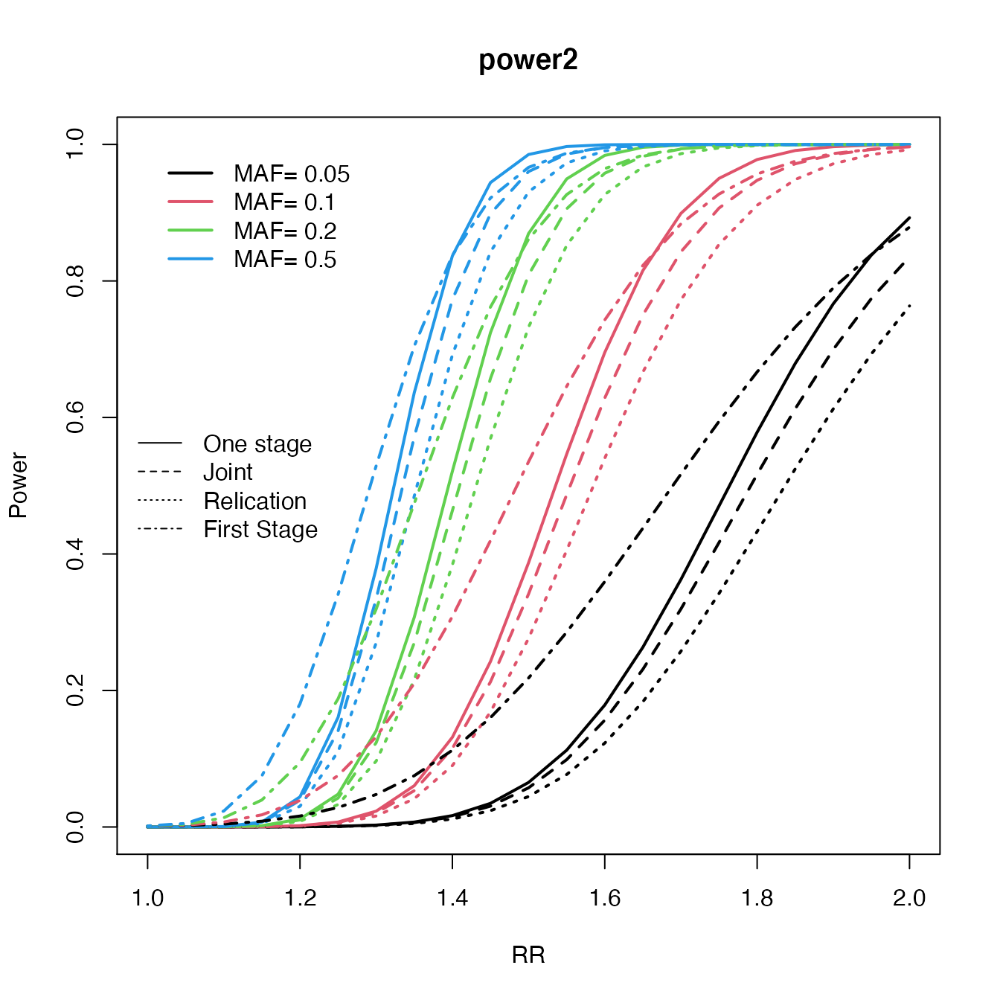
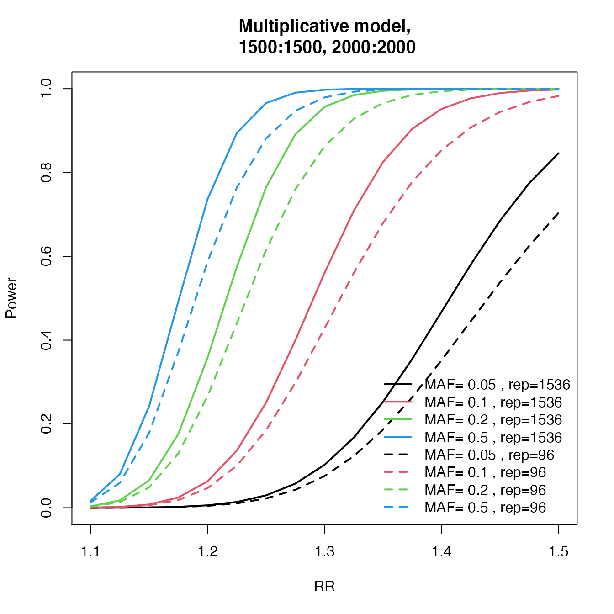
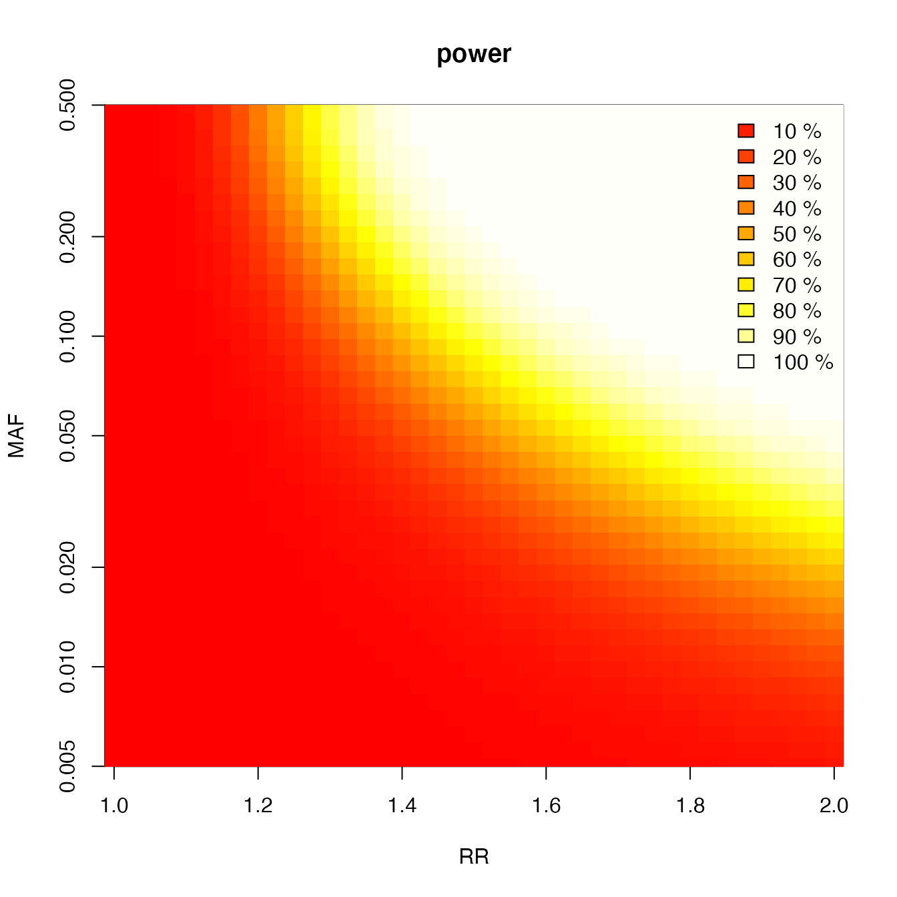
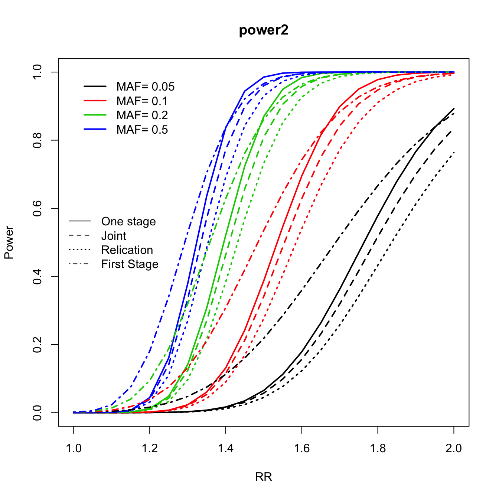

vignettes/cats.Rmd
cats.RmdSource: http://www.popgen.dk/software/index.php/CATS
library("cats")
cats(
freq = 0.2,
ncases = 500, ncases2 = 500,
ncontrols = 1000, ncontrols2 = 1000,
risk = 1.5, multiplicative = 1
)## Expected Power is;
##
##
##
## For a one-stage study = 0.94
## For first stage in two-stage study = 0.972
## For second stage in replication analysis = 0.784
## For second stage in a joint analysis = 0.929
## pi = 0.5rr <- seq(1, 2, by = 0.05)
maf <- c(0.05, 0.1, 0.2, 0.5)
c2 <- curve.cats(rr, maf,
ncases = 600, ncontrols = 600, ncases2 = 600,
ncontrols2 = 600, alpha = 0.000001, prevalence = 0.01
)## 1 2 3 4plot(c2, type = "One", main = "power2", ylab = "Power", xlab = "RR", file = NULL, col = 1:4)
lines.cats(c2, type = "Replication", lty = 3)
lines.cats(c2, type = "Joint", lty = 2)
lines.cats(c2, type = "First", lty = 4)
legend("left", c("One stage", "Joint", "Relication", "First Stage"), lty = 1:4, bty = "n")
power.J96 <- c()
power.J1536 <- c()
RR <- seq(1.1, 1.5, by = 0.025)
maf <- c(5, 10, 20, 50) / 100
for (tal2 in 1:length(maf)) {
J1 <- c()
J2 <- c()
for (tal in 1:length(RR)) {
temp <- cats(
freq = maf[tal2], ncases = 1500, ncontrols = 1500, ncases2 = 2000,
ncontrols2 = 2000, risk = RR[tal], pimarkers = 96 / 300000, alpha = 0.05 / 300000
)
J1[tal] <- temp$P.joint
temp <- cats(
freq = maf[tal2], ncases = 1500, ncontrols = 1500, ncases2 = 2000,
ncontrols2 = 2000, risk = RR[tal], pimarkers = 1536 / 300000, alpha = 0.05 / 300000
)
J2[tal] <- temp$P.joint
}
power.J96 <- cbind(power.J96, J1)
power.J1536 <- cbind(power.J1536, J2)
}
col <- 1:length(maf)
plot(RR, power.J1536[, 1], type = "l", lwd = 2, ylab = "Power", main = "Multiplicative model,
1500:1500, 2000:2000", col = col[1], ylim = 0:1)
for (tal2 in 2:length(maf)) lines(RR, power.J1536[, tal2], lwd = 2, col = col[tal2], type = "l")
for (tal2 in 1:length(maf)) lines(RR, power.J96[, tal2], lwd = 2, col = col[tal2], type = "l", lty = 2)
legend("bottomright", c(paste("MAF=", c(maf), ", rep=1536"), paste("MAF=", c(maf), ", rep=96")), col = col, lwd = 2, bty = "n", lty = c(rep(1, length(maf)), rep(2, length(maf))))
rr <- seq(1, 2, by = 0.025)
c <- super.cats(rr,
by = length(rr), ncases = 765, ncontrols = 1274, ncases2 = 100, ncontrols2 = 100,
alpha = 0.001, prevalence = 0.01
)## 1 2 3 4 5 6 7 8 9 10 11 12 13 14 15 16 17 18 19 20 21 22 23 24 25 26 27 28 29 30 31 32 33 34 35 36 37 38 39 40 41 42plot(c, main = "power", file = NULL)
rr <- seq(1, 2, by = 0.05)
maf <- c(0.05, 0.1, 0.2, 0.5)
c2 <- curve.cats(rr, maf,
ncases = 600, ncontrols = 600, ncases2 = 600, ncontrols2 = 600,
alpha = 0.000001, prevalence = 0.01
)## 1 2 3 4plot(c2, type = "One", main = "power2", ylab = "Power", xlab = "RR", file = NULL, col = 1:4)
lines.cats(c2, type = "Replication", lty = 3)
lines.cats(c2, type = "Joint", lty = 2)
lines.cats(c2, type = "First", lty = 4)
legend("left", c("One stage", "Joint", "Relication", "First Stage"), lty = 1:4, bty = "n")